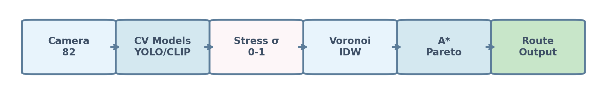

aimez
aimezBuilding the Responsible AI City · NY Tech Week
aimez — measured fields on pedestrian graphs
Research program: open civic data + public sensing → fixed-graph substrates where burden, topology, and route behavior can be tested in public.
Patent pending. High-level public deck only; no proprietary implementation detail. Not legal advice.
Scroll ↓ — questions (slide 2–3), then roster, substrate, figures. Links only on the last slide.
Slide 2 · Questions (arc I–III)
Questions on the table — legitimacy, stack, adoption
Hierarchy: trust → where the lab sits in urban AI → how institutions adopt. Midtown stress routing is the first demonstration, not the only product the program can become.
I. Legitimacy & governable deployment · share with: Dawson, Kennan, AI2030 governance
When you say AI a regulated city can trust, what evidence bar would you require for a pedestrian model built only on public NYC Open Data and DOT camera feeds—before it is allowed to influence routing or planning tools?
Program growth: governance playbooks, audit templates, and multi-informant field validation—sellable as trust infrastructure, not as another map app.
II. Platform & urban stack position · share with: Sirefman, Chappell
Post-Sidewalk and inside Earth Data / Sustainable Cities: does a bounded corridor graph laboratory belong inside a platform, as an open reference implementation, or as an academic instrument—and who maintains it when the street network changes?
Program growth: an integration layer for geospatial and sustainability stacks (pressure fields, operator readouts) without competing with Maps, Replica, or building-only tools.
III. Civic adoption & operational process · share with: Rosenberg (Celonis), Beeck Center programs
If operational excellence is making process visible: what would a reproducible Midtown pilot look like as a process diagram—data refresh, permit layers, governance sign-off—before anyone calls it a product?
Program growth: agency-ready pilot kits, refresh contracts, and digital-twin-style capacity layers (sheds, egress, closures)—civic infrastructure software, not consumer navigation.
Next (slide 3): capital, workforce, and how the program branches beyond routing.
Slide 3 · Questions (arc IV–V) + program manifold
Questions on the table — capital, workforce, futures
IV. Capital & ecosystem fit · share with: Lynn, Wiggins, Rooney, Pasmore, DiGiacomo
What would you fund that stays public-good, corridor-bounded, and reproducible—rather than another closed mobility API—and who owns the graph when open data and public cameras are the only inputs?
Program growth: non-dilutive corridor pilots, open-methodology licensing, and founder tools for graph-native civic AI (fields + operators), not a single vertical “stress router.”
V. Workforce & reproducible reference · share with: Christensen, Roker-Jones, Dawson (AI2030)
Does NYC’s AI workforce pipeline need reference implementations that students and agencies can re-run on the same graph snapshot—and who is accountable for updating the graph when the city reopens a street or closes a shed?
Program growth: curriculum bundles, hackathon substrates, and “graph maintainer” roles—education and civic tech labor, parallel to any routing demo.
↳ What aimez is besides Midtown routing
The same open-data + topology machinery supports operator/spectral analysis for planners, time-varying policy layers, multi-corridor kits, spatial-media installations, and cross-domain measurement research—routing is one export, not the program ceiling.
Bottom line: tonight is about finding which branch (governance, platform, ops, capital, workforce) partners want to co-develop; the corridor demo is the proof object, not the business plan.
Next: who is in the room tonight—map names to categories I–V.
Slide 4 · Building the Responsible AI City
Who is in the room
Celonis, 70F · 1 WTC · AI2030 / Tech Pulse 2030 · Partiful registration.
Panel 1 (5:25) — Governable city · facilitator: Alyssa Harvey Dawson (AI2030, governance, former CLO)
Josh Sirefman — Co-founder, Sidewalk Labs; ex-CEO Michigan Central.
Josh Chappell — Head of Eng., Google Earth Data & Sustainable Cities.
Ann Rosenberg — Global Head of Public Affairs, Celonis.
Ariel Kennan — Director, Beeck Center (Georgetown).
Panel 2 (6:15) — AI power map · facilitator: Alison Rooney (AI2030, capital markets)
John Lynn — Co-founder, Quay Acceleration.
John Pasmore — CEO, Latimer.ai.
Randy Wiggins — MD, NY Global Technology Innovation Hub.
Cristina DiGiacomo — CEO, 10P1.
Hosts — Ben Christensen · Marie Roker-Jones (AI2030) → arc V (workforce)
Dawson/Kennan → I · Sirefman/Chappell → II · Rosenberg/Kennan → III · Lynn/Wiggins/Pasmore/DiGiacomo → IV
Next: NYC open data inventory.
Substrate · NYC public data inventory
Open data and public feeds in the substrate
Public tables and feeds only; proprietary fusion, calibration, and routing cost are not listed here.
| Source | Role |
|---|---|
| NYC Digital City Map / centerlines | Graph topology |
| DOT traffic cameras (public feeds) | Demand → per-camera stress |
| DCP planimetric sidewalks | Width capacity |
| DCP PLUTO & footprints | Frontage / land use |
| DCP POPS | Plaza width |
| DOB NOW sheds | Dynamic shed factor |
| DOT open streets, closures, bikes, plazas | Supply modifiers |
| DOT bi-annual ped counts | Coarse public reference |
| MTA entrances, ridership, elevators | Station envelopes & time-varying egress |
| Dining / street-use permits | Frontage load |
Next: the problem—why these tables still do not give you walking burden without a measured field on the graph.
Process · Problem
Map distance is not walking burden
Planners and apps optimize hops or minutes. Pedestrians meet crowding, narrow sidewalks, sheds, station egress, and uneven capacity—local pressure that standard routers do not read.
Question: Can we represent that pressure on a graph and compare routes on measured exposure, not inferred comfort?
Next: the bounded Midtown pilot built entirely on the open inventory you just saw.
Outcome
First test surface: Midtown corridor
40th–59th Streets, Lexington to 8th Avenue. ~300 nodes, decision-locked stress field, multi-layer capacity from NYC Open Data. Same graph, varying fields—suitable for partners who need a bounded pilot.
Next: how open data, field study, and public cameras are synthesized into one substrate.
Process · Methods
Interdisciplinary measurement program
- Open civic data — sidewalk width, permits, frontage, transit egress (supply).
- Field study & lived calibration — reference blocks, audit against author knowledge (extendable to multi-informant).
- Public camera sensing — traffic cameras → vision stack → per-block stress (demand).
- Graph construction — directed pedestrian edges, fixed topology for reproducible tests.
Substrate = cross-domain synthesis of these layers, not a single vendor feed.
Next: the representation figure—cameras and models becoming a graph field.
Figure · Representation
Sensing → field on the graph

Public cameras → vision models → per-camera stress → spatial assignment → router.
Outcome
Demand and supply stay independent
Cross-street capacity (open data) and camera stress correlate near zero at the edge level (r ≈ −0.014). Routing can combine non-redundant signals instead of re-labeling the same phenomenon twice.
Process · Emergent topology
Stress field structure comes before routing
Before any path choice, the corridor shows spatial organization: hot southwest (Times Square), cooler east side, station-adjacent hot spots. This is the topology of measured pressure on the graph—not yet a recommendation.
Figure · Camera-derived stress (§2.1)
Decision-locked stress heatmap

Voronoi cells from camera catchments; canonical color lock. Foundation for all downstream routing figures.
Outcome
Substrate is legible without navigation
Partners can evaluate the field (sensing quality, spatial pattern, calibration) before endorsing route products. Next: supply overlay, then navigation layer built on this base.
Figure · Supply substrate
Cross-street capacity layers

Width, sheds, frontage, combined capacity—decomposable for ablation and policy scenarios.
Process · Navigation layer
Routing reads the substrate—not the reverse
Shortest-hop paths use the graph alone. Stress-aware paths read the measured field on edges. Claims stay at substrate-level exposure (accumulated stress, redistribution), not behavioral preference unless independently validated.
Figure · Routing demonstration
Same hops, different measured exposure

Grand Central → Carnegie Hall: equal hop count; lower accumulated stress on the stress-aware path in the locked demonstration.
Outcome
Corridor-wide response to cost perturbation
Under stress-weighted routing, load redistributes across the graph with bounded magnitude and no leakage across the corridor boundary in the locked test—suggesting internal reorganization, not a single-edge hack.
Figure · Redistribution (optional depth)
Soft-mode style rerouting

Absorbing vs avoided edges when routing cost switches—see canonical deck for operator and validation panels.
Process · Validation (public claims)
What we say today
- Stress-aware path dominates shortest on measured stress at equal hops (demonstration OD).
- Supply ⊥ demand at cross-street edges (orthogonality).
- Lived-knowledge polarity: 8/12 aligned, 0 misaligned on reference blocks (self-report; needs multi-informant).
- Open: independent pedestrian counts at block resolution; behavioral trials.
Tonight · After the panels
One-line asks by organization (not a vendor meeting)
Use networking to match their mission to a bounded public demo—share the deck URL, not a procurement conversation.
- Google Earth Data & Sustainable Cities (Chappell): Is a pedestrian stress field a useful input layer for sustainable-cities work, or out of scope?
- Sidewalk lineage (Sirefman): Interest in a corridor-scale governable reference pilot vs platform integration.
- Beeck Center (Kennan): Would you cite an open-methodology corridor substrate in civic-innovation or digital-equity programming?
- Celonis (Rosenberg): Any path to showcase operational adoption of civic infrastructure pilots inside enterprise partners.
- AI2030 (Christensen, Roker-Jones, Dawson): Slot for a reproducible NYC reference implementation in workforce or governance programming.
- Quay / NY innovation hub (Lynn, Wiggins): Non-dilutive pilot or intro funding for public-good graph infrastructure.
- Latimer (Pasmore) / 10P1 (DiGiacomo): Responsible-AI review lens on public-feed-derived civic models.
Next: links only on the final slide.
After the conversation
Send this deck · optional follow-ups
This URL: aimez.ai/public/executive-summary.html
Optional if they want depth (can be slow): figure slides · live routing demo.
Canonical figure slides · Live routing demo
Gil Raitses · Syracuse University · patent pending